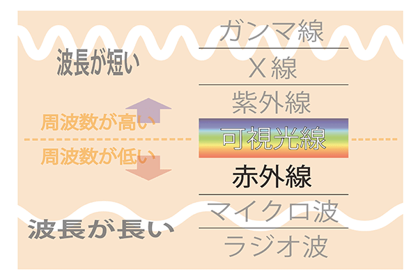
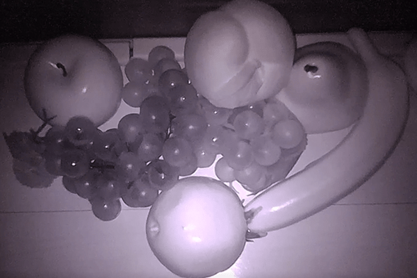
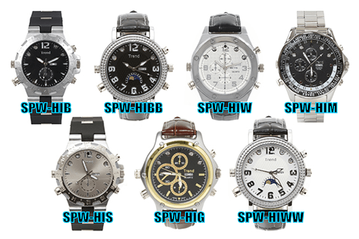
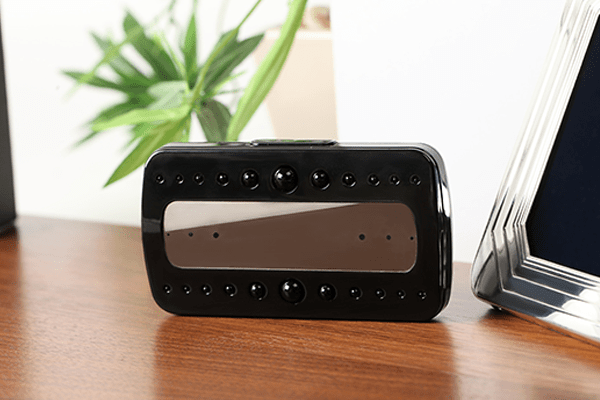
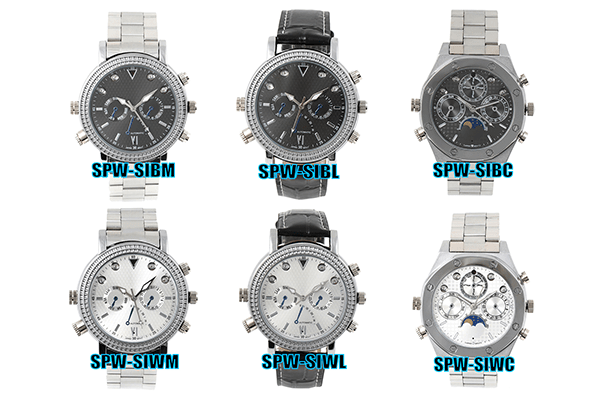
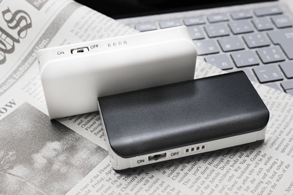

赤外線とは？

さわやかな春風の吹く、心躍る季節となりましたね(^^)
お花見をしたり、ピクニックへ行ったり♪
アウトドアイベントを楽しんじゃいましょう！
さて、今回の内容は「赤外線」についてです。
当店HPをご覧になったことのあるお客様なら、きっと一度は目にしたことのある
【 赤外線機能搭載で暗闇にも対応！ 】というフレーズ・・・
このフレーズを見て、
・・・ちょっと待って！そもそも赤外線ってなに？
なんで、赤外線を照射することで映像に残せるの？
なんて思ったことありませんか？？
今回のブログでは、そんな知っているようで知らない
「赤外線」について簡単にご説明させていただきます！
人間の目でも何も見えないような暗闇では、通常のカメラでもなかなか撮影できませんが、
小型なのに真っ暗でも撮影OKな超強力な赤外線を搭載したモデルも、たくさんご紹介いたします！
どうぞお楽しみに！
↓↓まずは、こちらの画像をご覧ください↓↓

赤外線とは、人間の目で見ることのできない不可視光線と呼ばれる光です。
電磁放射に含まれ、私たちの目で見ることができる可視光線は電磁放射の中の極一部です。
図を見て頂くとお分かりいただけると思いますが、赤外線は可視光線よりも周波数が低いため、
英語では「Infrared(赤の下)」と呼ばれています。
ちなみに、赤外線機能を搭載している弊社商品には
「Infrared」の頭文字「I」を商品名に含ませております☆
※一部含まれていない商品もございます・・（＞＜）
また、肉眼で見ることは出来ませんが、皮膚で赤外線を熱として感じることが可能です。
(弊社で赤外線の検証を行う際、赤外線LEDをONにして手をかざしてみると微かですが熱を感じます！)
また、携帯電話のカメラ機能や、デジタルカメラを使うことで赤外線LEDの光を確認する事も可能です！
(一部見えない端末もあるようですが・・・)
気になった方はぜひお試しください(^^)

では何故、赤外線を使うことで暗闇での撮影が行えるのでしょうか？？
全てのものは"赤外線を発しています"
モノにより強弱はありますが、私たち人間でさえも赤外線を発しています・・・！
赤外線がモノに当たると、対象物はある程度 赤外線を吸収しますが、
吸収できなかったものを反射する性質があり、反射する力は温度などによっても変化します。
その反射した光の強弱をカメラがとらえているという原理です☝
そのため、赤外線を照射しながら撮影を行った映像は白黒で映っているのです。
(技術が向上し、中にはカラーで映像を残せるカメラもあるみたいです…！)
その為、対象物に赤外線が当たらないと反射もしないので、映像には残すことができません。
赤外線の照射能力というのも、暗闇で撮影するのに重要なポイントとなります。
弊社では、赤外線機能を搭載している商品を以下の様に区分しています！
F1m程まで照射可能なものを「通常赤外線」
F2～3m程度照射可能なものを「強力赤外線」
代表商品：SPW-HIシリーズ／SPC-13
SPW-HIシリーズ
SPC-13
F4m以上照射可能なものを「超強力赤外線」
代表商品：SPW-SIシリーズ／SPW-PI／SPMB-IHSB・IHSW
SPW-SIシリーズ
SPW-PI
SPMB-IHSB,IHSW
Fそれ以上に強力なものですと、SPO-BOOK(照射距離約8m) ←おすすめ！
SPO-BOOK
※SIシリーズとHIシリーズにつきましては、
入荷待ち、または現在販売されていない商品もございますのでご了承下さいませ。
赤外線のメリットはなんと言っても暗闇に対応し、
"撮りたいものを逃さない"、"見えないものを映し出せる"その点ではないでしょうか。
窃盗や強盗などの犯罪の多くは夜であったり暗闇に紛れて行われているため、
一般的な防犯カメラや監視カメラなどにも、赤外線機能が活用されているものも多くございます。
店舗経営者の方などで、いつの間にか商品が減っている…と、お困りの方いらっしゃいませんか？
もしくは、パートナーが浮気をしているかも…、ストーカーされていて困っている…
なんて方はいらっしゃいませんか？
そんな方は是非とも赤外線機能付き小型カメラをご検討くださいませm(_ _)m
当店HPはコチラ↓↓からご覧いただけます！
【ＳＰＹ－ＯＮＬＩＮＥ－ＳＨＯＰ】

ご相談・ご質問はこちらから!!（店舗サイトのお問合せページへ飛びます）
mail：shop@spy-online.jp
tel：042-719-3319 (対応時間10：00～12：00、13：00～17：00)
今回はこの辺で…
またお会いしましょう(^_^)/~